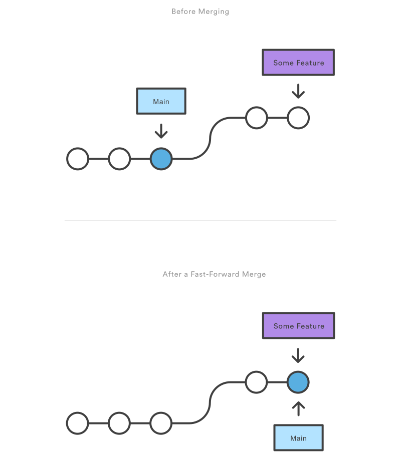

Basic development cycle
Overview
- What are branches, and how can a simple model be set up for individual development?
- How can changes be made in the repository?
- How can files be restored to a previous version?
- How can files be exempted from version control?
As Git is extremely popular, it is part of most integrated development environments (IDE) as a GUI. This can feel more intuitive at first, but the following sections describe the workflow using the original Git commands. These are used by the IDE as well, and knowing them gives a better understanding of how Git works.
Branches
Branching can be seen as (temporarily) diverging from the main line of development and continue to do work independently. This prevents the chance of accidentally introducing a bug to the production code whilst developing. When a repository is initialised via a provider, this main branch is automatically created, usually named "main" or "master", and it is also tagged as the default branch.
Apart from the initial setup of the project, it is good practice to create a new branch from the default branch before starting any form of development. This way of branching gives a clear oversight of what is developed where. In a simple branching model, like the one depicted below, development is done in a feature branch, and eventually it is merged with the default branch.

Courtesy of Atlassian.
For the Git examples given on this page, a local repository will suffice. The snippet below makes a new directory, creates a local Git repository, and creates the default branch:
mkdir ~/workshop
cd ~/workshop
git init
git switch --create "main"
Note
With the git config --global init.defaultBranch main configuration, a default branch will automatically be created when running the git init command.
The second step is to create a new branch from the default branch. There are two ways to do this, with the second option being a shorthand for the first one:
git branch "feature"
git switch "feature"
git switch --create "feature"
Note
The --create flag can be replaced with the short version -c.
Committing changes
Within the feature branch, code can be written, documentation can be added etc. To show the way to commit these changes,
a simple textfile is used instead of real code (within the ~/workshop directory) called code.txt:
echo "Hello Git!" > code.txt
Git registers that the repository contains "untracked" files, as in, changes made to these files cannot be tracked, as there isn't a reference version of the file in the repository yet:
git status
Git response
On branch feature
No commits yet
Untracked files:
(use "git add <file>..." to include in what will be committed)
code.txt
The next step is to add the file to the staging area. If you think of Git as taking snapshots of changes over the life of a project,
git add specifies what will go in a snapshot (the staging area), and git commit then actually takes the snapshot,
making a permanent record of it as a commit. When adding untracked files, it is best to add them individually.
There is also an option to add all files at once to Git, but this could easily include files which should be ignored:
git add code.txt
The last step is to commit this change to the repository. It's good practice to use short, but descriptive commit messages. Imagine having to find the commit where a bug was introduced, and all of them were called "added feature":
git commit --message "added text file"
Git response
[feature (root-commit) 584cd1f] added text file
1 file changed, 0 insertions(+), 0 deletions(-)
create mode 100644 code.txt
To see if everything went as expected, the git status command can be called again, to see it empty.
With new changes, the same cycle is repeated until the feature is completed and the branch can be merged into the default branch.
Git also has a command to check the differences within a changed file (git diff), and logs with all commits (git log),
but with realistic code changes spread over multiple files, the output of these commands can become difficult to interpret.
It is recommended to use a GUI for this.
Restoring files
Often it can be useful to make temporary changes to the code, simply to check something or for debugging purposes. Git offers a command to immediately restore the file to the version stored in the current branch:
git restore "<FILE>"
Files can also be removed from the staging area, in the scenario they are accidentally added:
git restore --staged "<FILE>"
In both cases, git status should reflect the intended recovery.
Ignoring files
When working with large repositories and/or a variety of tools that create local files, the Git status page can quickly become filled with files. Most of the time, a large portion of these should not be committed. Having to select the right file each time would be an arduous job, and in this scenario the ignore-functionality of Git comes into its own. Files and/or directories can be ignored based on a pattern like the ones below:
/hello, the "hello" directory in the root directory is ignored.hello, anything named "hello" in the root directory is ignored.*hello*, anything that contains "hello" in the root directory is ignored.**/*hello*, anything that contains "hello" in any directory is ignored.
These patterns can be defined the .gitignore file, and Git automatically picks up the items to ignore.
The git status --ignored command can be used to see the ignored files.
Question
What is the patterns to ignore the .idea folder in the root directory, but not idea.txt?
Answer
/.idea
Merging
When developing in a single branch at the time, merging is straight-forward. This becomes a different story when collaborating with others, especially on the same piece of code. The chances of getting a merge conflict in these scenarios are high. For now, a branch can simply be merged into the default branch with the following command:
git switch "main"
git merge "feature"
After a successful merge, first check if the correct branch is checked out with git branch, then, the feature branch can be deleted:
git branch --delete "feature"
Summary
On this page, only the basics commands of Git have been addressed. They are meant to explain the standard workflow, but it is by no means complete.
Git offers many more commands, each of which can be invaluable in a specific scenario.
It also offers its own tutorial, which can be accessed with the git help tutorial command.
Question
Which command would be useful in the situation where you have uncommitted changes, but want to switch to another branch?
Answer
The git stash command. If unused, and the uncommitted changes include files which are present in both branches,
Git will gives the following error:
Git response
error: Your local changes to the following files would be overwritten by checkout:
<FILES>
Please commit your changes or stash them before you switch branches.
Further reading
Next up is the advanced work cycle, which delves further into Git with more advanced scenarios, like merge conflicts and code reviews.